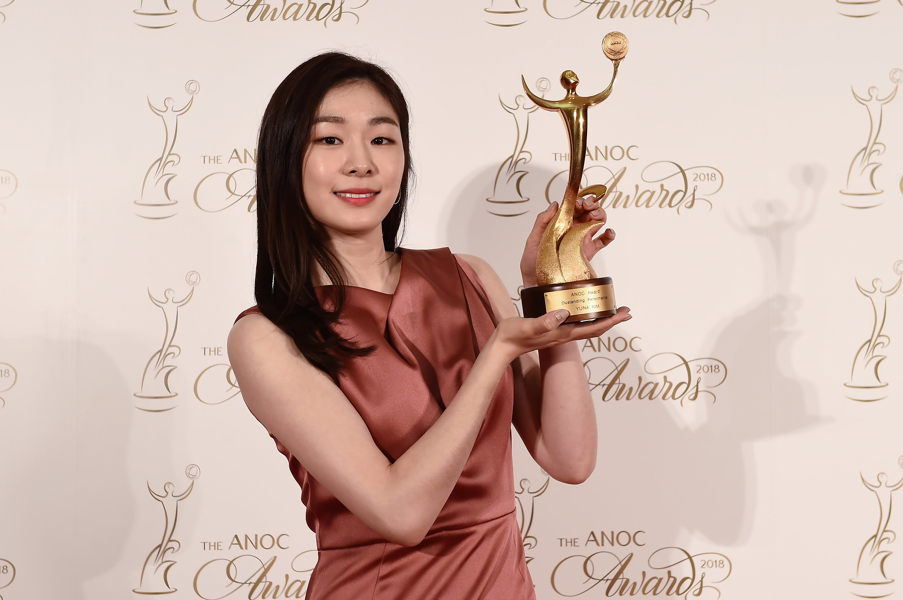

About Yuna

Achievements
- Former world record holder for the ladies' combined total score. Kim set the record three times and held the record for the longest time from March 28, 2009 to January 27, 2017.
- Former world record holder for the ladies' short program score. Kim set the record five times and held the record for the longest time from March 23, 2007 to March 27, 2014.
- Former world record holder for the ladies' free skate score. Kim set the record three times and held the record for the longest time from November 24, 2007 to April 2, 2016.
- First and only figure skater to have never finished off the podium in her entire career under the current ISU judging system.
- First figure skater to achieve a Career Super Grand Slam under the current ISU judging system. She is the first ladies' singles skater to win gold in all major ISU championship titles including the Junior Grand Prix Series and Final, World Junior Championships, Grand Prix Series and Final, Four Continents Championships, World Championships, and Winter Olympic Games.
- First female skater to break the 200-point, 210-point, and 220-point mark in the ladies' combined total in international competition (2009 World Championships, 2009 Trophée Eric Bompard, 2010 Winter Olympics).
- First female skater to break the 140-point and 150-point mark in the ladies' free skate total in international competition (2010 Winter Olympics).
- First female skater to break the 75-point mark in the ladies' short program in international competition (2009 World Championships).